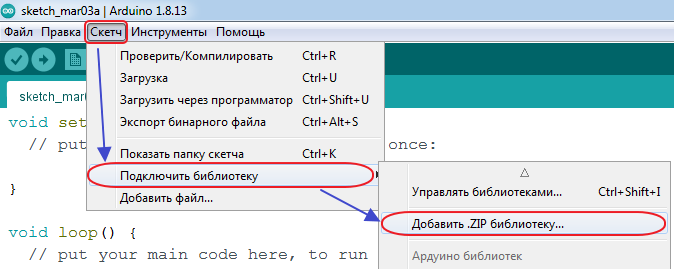
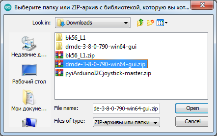
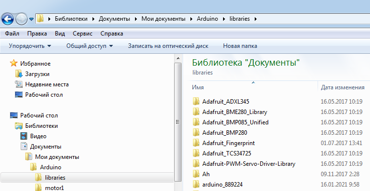
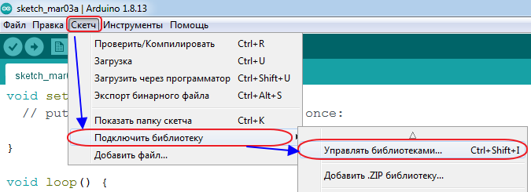
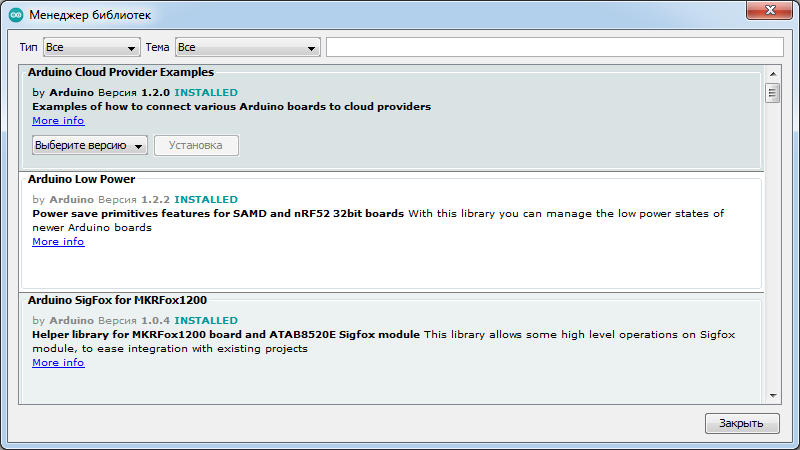

Установка библиотек в Arduino IDE
Для создания многих скетчей требуются библиотеки. Чтобы использовать методы и функции библиотеки, её нужно скачать, установить и подключить.
Многие библиотеки находятся в zip архиве, но не спешите доставать файлы из архива, т.к. Arduino IDE сама может распаковывать архивы и размещать библиотеки в нужных папках.
Если Вы скачали архив библиотеки с сайта не указывая путь для сохранения файла, то скаченный (загруженный) Вами файл скорее всего находится в папке Загрузки.
После скачивания библиотеку нужно установить. Установить библиотеку можно вручную или сделать это средствами Arduino IDE.
Установка библиотеки средствами Arduino IDE
- Войдите в меню: Скетч > Подключить библиотеку > Добавить .ZIP библиотеку....

Рис. 1 - Меню добавления библиотеки - В появившемся окне выберите папку со скаченным ZIP-архивом.

Рис. 2 - Выбор папки и файла с ZIP-архивом - Выберите ZIP-файл библиотеки и нажмите на кнопку «Открыть» (Open).
Установка библиотеки вручную
Распакуйте скаченный ZIP-архив и поместите папку с файлами библиотеки в папку libraries. Обычно путь к этой папке: Библиотеки > Документы > Мои Документы > Arduino > libraries (на Вашем компьютере путь можеть быть другим).

Если во время копирования программа Arduino IDE была открыта, то нужно закрыть все окна этой программы и перезапустить. Теперь можно подключать библиотеки в скетч.
Папка libraries есть ещё в папке программы Arduino IDE (где располагается файл arduino.exe). Не рекомендуется устанавливать библиотеки в этой папке. Если Вы установите новую версию Arduino IDE, то библиотеки находящиеся в папке Документы > Arduino > libraries, будут доступны в новой версии Arduino IDE, а библиотеки находящиеся в папке libraries программы Arduino IDE в новой версии не будут доступны.
Подключение библиотеки
Для того чтобы подключить библиотеку, в начале скетча нужно написать оператор #include с указанием именеи библиотеки. Например:
#include <iarduino_4LED.h> // Подключение библиотеки iarduino_4LED
Некоторые библиотеки работают используя методы и функции других библиотек, тогда нужно подключать две библиотеки, сначала подключается та, методы и функции которой использует вторая.
Например:
// Библиотека LiquidCrystal_I2C использует методы и функции библиотеки Wire #include <Wire.h> // Подключение библиотеки Wire для работы с шиной I2C #include <LiquidCrystal_I2C.h> // Подключение библиотеки LiquidCrystal_I2C //для работы с LCD дисплеем по шине I2C
Для работы с большинством библиотек, нужно создать объект (экземпляр класса библиотеки), через который будут доступны их функции и методыю
Например:
LiquidCrystal_I2C lcd(0x27,20,4); // lcd это объект библиотеки LiquidCrystal_I2C // через объект обращаются к функциям и методам библиотеки
Вместо lcd можно написать любое слово или сочетание букв и цифр, это название объекта через который можно обращаться к методам и функциям библиотеки. Если вместо lcd написать myLCD, то и ко всем методам и функциям библиотеки LiquidCrystal_I2C, нужно обращаться через указанное имя объекта, например:
myLCD.print("my text");
Поиск библиотек
Библиотеки можно искать самостоятельно или можно воспользоваться функционалом Arduino IDE.
Выберите пункт меню: Скетч > Подключить библиотеку > Управлять библиотеками....

Откроется «Менеджер библиотек», в котором можно найти интересующую библиотеку введя её название в строку поиска, дополнительно можно установить пункты «Тип» и «Тема».

Нажатие на описании библиотеки приведёт к появлению кнопок «Выберите версию» и «Установка». После нажатия на кнопку «Установка» можно приступать к подключению библиотеки в скетч.